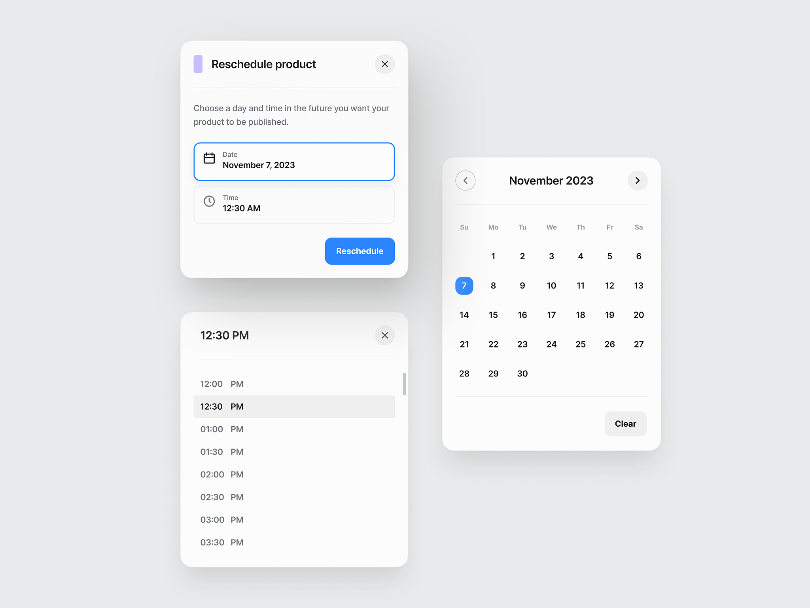
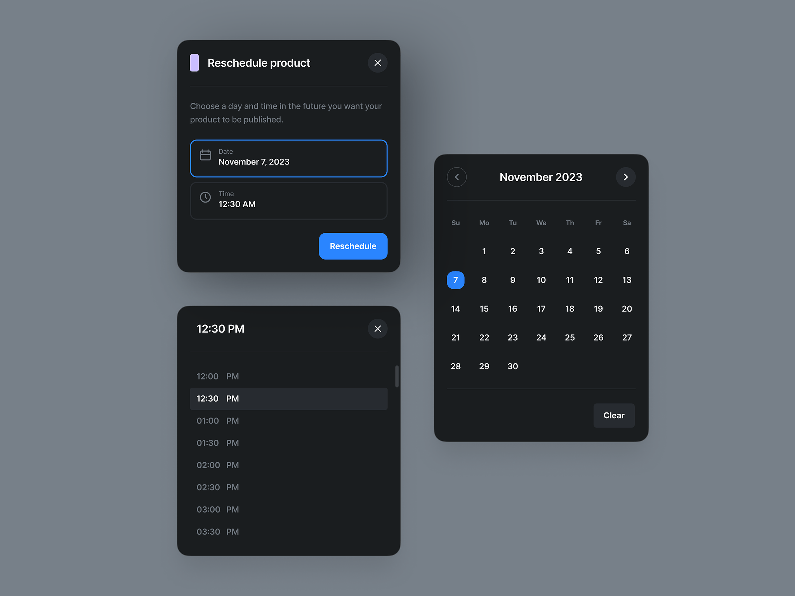

In web development, CSS and design work hand-in-hand to create compelling user experiences. CSS brings designs to life digitally, translating visual mockups into actual rendered elements. But CSS also informs the design process itself. Understanding its capabilities and limitations allows designers to craft effective layouts and interfaces.
Keep them short
When designing for the web, keeping CSS in mind from the start prevents frustration down the road. For example, layered graphical elements must be broken down into achievable HTML components. Typography and color schemes are also heavily influenced by CSS possibilities.
Designers should have a strong handle on core CSS concepts like the box model, selectors, specificity and inheritance.
When designing for the web, keeping CSS in mind from the start prevents frustration down the road. For example, layered graphical elements must be broken down into achievable HTML components. Typography and color schemes are also heavily influenced by CSS possibilities.
Exploit the power of selectors
On the development side, CSS itself involves visual design skills.Bringing a layout to life requires not just coding, but typographic, spacing and color sensibilities. CSS skills give developers control over the final look and feel.

Overall, CSS is a uniquely visual language, with a direct impact on user-facing design. By embracing its connection to the design process, both designers and developers can build interfaces that are engaging and “CSS-native”. The closer these roles work together, the better the end result. (edited)
Conclusion
In conclusion, thoughtfully naming CSS classes, IDs, and other selectors is an important part of keeping stylesheets scalable and maintainable. Use semantic, descriptive names that communicate what a selector is styling. Implement methodical naming conventions and structures for better organization

Avoid repetitive and overly specific names by separating structural styles from visual ones. And don’t be afraid to chain multiple classes together for more modular and flexible selectors.